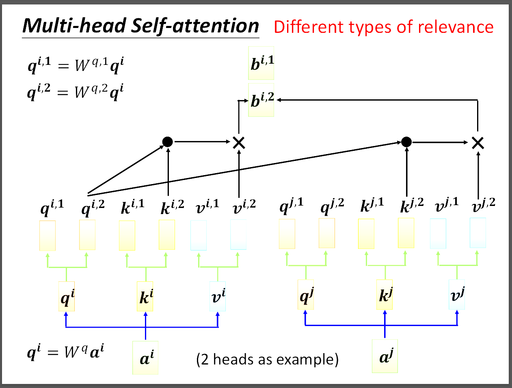

台大教授李宏毅老師[機器學習概論2021][自注意力機制 (Self-attention)]
📘 文章探討
1️⃣起因與要解決的問題
2️⃣Self-attention的機制
3️⃣Multi-head Self-attention
4️⃣Positional Encoding
5️⃣Reference
1️⃣起因與要解決的問題
我們剛剛討論CNN的時候老師有特別說過輸入的相量要一致，但在這裡我們要解決的是輸入相量不一致的問題。
也就是不再是我們輸入一個相量，輸出也是一個相量。有可能演變成我們輸入一串相量，然後輸出一個或多個相量。
輸入的向量集合可能是一段聲音訊號、分子圖、人際關係圖等等，因此self-attention是一個模型去解決輸入複雜的問題。
我們從這張圖可以看到輸出大致有三種。第一種是輸入幾個向量輸出就幾個向量，第二種是輸入多個向量只輸出一個向量，第三種則是類似seq2seq的方式輸出，也就是輸入跟輸出的向量數目不相同。
這裡老師舉了一個詞性辨識的例子，當人類看到一段"I saw a saw."可以明確知道第一個saw應該是動詞第二個saw是名詞。
但是當我們輸入給機器的時候如果沒有一些特殊的設定不會知道，那我們要怎麼讓機器知道該如何分辨呢?
我們可以看到這張圖，每一個input都經過FC輸出一個output，如果不考慮前後文的關係，機器不可能知道怎麼分辨。
因此我們透過前後連接的方式，讓機器知道說要考慮前後文的關係，這樣就比較容易進行辨識。
但是出現一個問題，就是我們應該要讓機器看完全部的sequence嗎?因為有時候input的sequence可能非常長，尤其又是FC的關係，所以耗費的資源會非常多而且會overfitting。
2️⃣Self-attention的機制

這裡我們就可以用self-attention來解決剛剛因為要讓FC看整個sequence所造成的問題。
首先我們不讓所以的input都先過FC，而是先用所謂的self-attention，然後再通過FC。並且self-attention是考慮過整個sequence才輸出的。
如此一來，FC就不是只考慮一個向量，而是考慮整個sequence再來決定要輸出什麼結果。
我們也可以疊加很多層的self-attention，知名模型Transformer就是應用self-attention所做出來的。
首先想法就是我們要看這個input跟整個sequence的其他input有什麼關係對吧，所以圖片中我們看a1跟其他input的關係後才輸出b1。
我們判斷的依據是會算出一個關係分數叫做α，可以參考圖片有兩種做法dot product或additive，事實上還有更多種。

大概的方式就是拿a1算出的q1跟a2、a3、a4的k內積得到a1跟其他人的attention score α1i。
通常會用softmax或其他activation function，再拿這些attention score跟各自的v相成得到輸出b。這裡誰的attention score越大誰就會dominate結果。
這裡就只有W矩陣需要learn，其他都是矩陣運算，attention matrix就是剛剛說的裡面放有許多attention score的matrix。
3️⃣Multi-head Self-attention

圖片中拿two head舉例，簡單來說就是把剛剛算的qkv都各自成上兩個不同的W矩陣，得到兩個不同的qkv，然後qkv第一個自己運算得到b1，第二個得到b2。
然後這兩個b經過transform整合成真正的輸出。
4️⃣Positional Encoding
但是剛剛self-attention在機器裡面並沒有位置的資訊，也就是不存在a1跟a4比較遠的情況，但事實上在詞性標註的任務我們會需要用到位置的資訊，此時就有positional Encoding這個方法。
圖片中我們把圖片分割成一個一個小區塊，但這樣會有一個問題，那就是如果sequence的長度大於我們區分的區塊數量呢?Positional vector是一個值得研究的問題。
5️⃣Self-attention v.s. CNN v.s. RNN
其實self-attention就是比較複雜的CNN，CNN中的receptive field self-attention會自己學習。
RNN會有時序的問題，也就是後面的output要等前面的output先輸出才能得到，不是平行生成的。